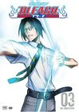

Bleach
Stephen Klancher
...has seen 50
...has seen 0.8 hours
...has not seen 5.3 hours

Timeline
First Unseen:
Morning of the Sentence (# 50)
...has seen 50
...has seen 0.8 hours
...has not seen 5.3 hours
Timeline
First Unseen:
Morning of the Sentence (# 50)


Stephen Klancher: SEEN 
My memory of this was that finally after watching 50 episodes, I was current on what had come out at the time and could finally watch them with Brett as they were released. But then at that point he stopped watching Bleach. Oh well.
The Strongest Shinigami! Ultimate Confrontation Between Teacher and Students (2005) Airs on 2008-03-16
S1 - E55 of Bleach
S1 - E55 of Bleach
Conclusion of the Death Match! White Pride and Black Desire (2005) Airs on 2008-04-13
S1 - E59 of Bleach
S1 - E59 of Bleach
True Identity of the Devil, the Secret which Is Revealed (2006) Airs on 2008-06-15
S1 - E68 of Bleach
S1 - E68 of Bleach
The Moment of Collision! An Evil Hand Draws Near to the Quincy (2006) Airs on 2008-07-06
S1 - E71 of Bleach
S1 - E71 of Bleach
Earth-Shattering Event at 11th Squad! The Shinigami Who Rises Again (2006) Airs on 2008-08-02
S1 - E75 of Bleach
S1 - E75 of Bleach
Shocking Revelations for the 13 Divisions!! The Truth Buried in History (2006) Airs on 2008-08-31
S1 - E78 of Bleach
S1 - E78 of Bleach
Assault from a Formidable Enemy! A Tiny Final Line of Defense?! (2006) Airs on 2008-09-13
S1 - E80 of Bleach
S1 - E80 of Bleach
Annihilation of the Lieutenants!? Trap in the Underground Cave (2006) Airs on 2008-11-15
S1 - E88 of Bleach
S1 - E88 of Bleach
The Bount Assault! The Gotei 13 of Destructive Earthquake (2006) Airs on 2008-12-20
S1 - E93 of Bleach
S1 - E93 of Bleach
Byakuya Takes the Field! Dance of the Wind-Splitting Cherry Blossoms (2006) Airs on 2009-01-03
S1 - E95 of Bleach
S1 - E95 of Bleach
Ichigo, Byakuya, Kariya, The Battle of the Three Extremes! (2006) Airs on 2009-01-10
S1 - E96 of Bleach
S1 - E96 of Bleach
Hitsugaya Strikes! Slice the Enemy in the Middle of the Forest (2006) Airs on 2009-01-17
S1 - E97 of Bleach
S1 - E97 of Bleach
10th Division's Death Struggle! The Release of Hyōrinmaru (2006) Airs on 2009-03-07
S1 - E104 of Bleach
S1 - E104 of Bleach
Ichigo and Rukia, Thoughts in the Revolving Around Heaven (2007) Airs on 2009-04-11
S1 - E109 of Bleach
S1 - E109 of Bleach
Reopening of the Substitute Business! The Terrifying Transfer Student (2007) Airs on 2009-04-18
S1 - E110 of Bleach
S1 - E110 of Bleach
The Swooping Descent of the Dark Emissary! The Propagation of Malice (2007) Airs on 2007-06-13
S1 - E129 of Bleach
S1 - E129 of Bleach
Rangiku's Tears, the Sorrowful Parting of Brother and Sister (2007) Airs on 2007-06-27
S1 - E131 of Bleach
S1 - E131 of Bleach
Szayelaporro Laughs, The Net Trapping Renji is Complete (2008) Airs on 2009-10-31
S1 - E162 of Bleach
S1 - E162 of Bleach
Desperate Effort vs. Desperate Effort! Hollowfied Ichigo (2008) Airs on 2009-11-14
S1 - E166 of Bleach
S1 - E166 of Bleach
New Development, the Dangerous Transfer Student Appears! (2008) Airs on 2010-09-04
S1 - E169 of Bleach
S1 - E169 of Bleach
Desperate Struggle Under the Moonlit Night, the Mysterious Assassin and Zanpakutō (2008) Airs on 2010-09-11
S1 - E170 of Bleach
S1 - E170 of Bleach
The Appearance of the Great Evil! The Darkness in the House of Kasumiōji (2008) Airs on 2010-10-02
S1 - E173 of Bleach
S1 - E173 of Bleach
The Nightmare Which is Shown, Ichigo's Inside the Mirror (2008) Airs on 2010-11-06
S1 - E178 of Bleach
S1 - E178 of Bleach
Kira and Kibune, Offense and Defense of the 3rd Division (2008) Airs on 2010-12-18
S1 - E184 of Bleach
S1 - E184 of Bleach
Joining the Battle! The Strongest Soul Reaper Army Appears (2008) Airs on 2011-03-20
S1 - E196 of Bleach
S1 - E196 of Bleach
Defend Karakura Town! Entire Appearance of the Shinigami (2009) Airs on 2011-07-30
S1 - E215 of Bleach
S1 - E215 of Bleach
Vice-Captains Annihilated! The Terrifying Demonic Beast (2009) Airs on 2011-10-08
S1 - E225 of Bleach
S1 - E225 of Bleach
Dragon of Ice and Dragon of Flame! The Strongest Showdown! (2009) Airs on 2012-04-07
S1 - E248 of Bleach
S1 - E248 of Bleach
Senbonzakura's Bankai! Offense and Defense of the Living World (2009) Airs on 2012-04-14
S1 - E249 of Bleach
S1 - E249 of Bleach
The Person with the Unknown Ability! Orihime Is Targeted (2010) Airs on 2012-07-07
S1 - E261 of Bleach
S1 - E261 of Bleach
The Approaching Breath of Death, the King Who Rules Over Death! Airs on 2012-10-13
S1 - E275 of Bleach
S1 - E275 of Bleach
Fierce Fighting Conclusion! Release, the Final Getsuga Tenshō! (2011) Airs on 2013-08-03
S1 - E309 of Bleach
S1 - E309 of Bleach
Unusual Incident in Seireitei?! Gotei 13 Invading Army Arc! (2011) Airs on 2013-10-05
S1 - E317 of Bleach
S1 - E317 of Bleach
Pursue Kageroza! Technological Development Department, Infiltration! Airs on 2014-03-15
S1 - E336 of Bleach
S1 - E336 of Bleach
3rd Year High School Student! Dressed Up, and a New Chapter Begins! Airs on 2011-11-01
S1 - E343 of Bleach
S1 - E343 of Bleach
A Crisis Sneaking up on the Kurosaki Family!? Ichigo's Confusion! Airs on 2014-06-07
S1 - E347 of Bleach
S1 - E347 of Bleach
The Man Who Killed the Shinigami Substitute!? Tsukishima Makes His Move Airs on 2014-06-26
S1 - E350 of Bleach
S1 - E350 of Bleach